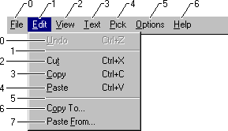

title: About Menus description: This topic discusses menus. ms.assetid: fd0b26f1-93cd-421b-9097-8502ab7681e9 keywords:
A menu is a list of items that specify options or groups of options (a submenu) for an application. Clicking a menu item opens a submenu or causes the application to carry out a command. This section provides information on the following topics:
A menu is arranged in a hierarchy. At the top level of the hierarchy is the menu bar; which contains a list of menus, which in turn can contain submenus. A menu bar is sometimes called a top-level menu, and the menus and submenus are also known as pop-up menus.
A menu item can either carry out a command or open a submenu. An item that carries out a command is called a command item or a command.
An item on the menu bar almost always opens a menu. Menu bars rarely contain command items. A menu opened from the menu bar drops down from the menu bar and is sometimes called a drop-down menu. When a drop-down menu is displayed, it is attached to the menu bar. A menu item on the menu bar that opens a drop-down menu is also called a menu name.
The menu names on a menu bar represent the main categories of commands that an application provides. Selecting a menu name from the menu bar typically opens a menu whose menu items correspond to the commands in a category. For example, a menu bar might contain a File menu name that, when clicked by the user, activates a menu with menu items such as New, Open, and Save. To get information about a menu bar, call GetMenuBarInfo.
Only an overlapped or pop-up window can contain a menu bar; a child window cannot contain one. If the window has a title bar, the system positions the menu bar just below it. A menu bar is always visible. A submenu is not visible, however, until the user selects a menu item that activates it. For more information about overlapped and pop-up windows, see Window Types.
Each menu must have an owner window. The system sends messages to a menu's owner window when the user selects the menu or chooses an item from the menu.
This section discusses the following topics.
The system also provides shortcut menus. A shortcut menu is not attached to the menu bar; it can appear anywhere on the screen. An application typically associates a shortcut menu with a portion of a window, such as the client area, or with a specific object, such as an icon. For this reason, these menus are also called context menus.
A shortcut menu remains hidden until the user activates it, typically by right-clicking a selection, a toolbar, or a taskbar button. The menu is usually displayed at the position of the caret or mouse cursor.
The Window menu (also known as the System menu or Control menu) is a pop-up menu defined and managed almost exclusively by the operating system. The user can open the window menu by clicking the application icon on the title bar or by right-clicking anywhere on the title bar.
The Window menu provides a standard set of menu items that the user can choose to change a window's size or position, or close the application. Items on the window menu can be added, deleted, and modified, but most applications just use the standard set of menu items. An overlapped, pop-up, or child window can have a window menu. It is uncommon for an overlapped or pop-up window not to include a window menu.
When the user chooses a command from the Window menu, the system sends a WM_SYSCOMMAND message to the menu's owner window. In most applications, the window procedure does not process messages from the window menu. Instead, it simply passes the messages to the DefWindowProc function for system-default processing of the message. If an application adds a command to the window menu, the window procedure must process the command.
An application can use the GetSystemMenu function to create a copy of the default window menu to modify. Any window that does not use the GetSystemMenu function to make its own copy of the window menu receives the standard window menu.
Associated with each menu bar, menu, submenu, and shortcut menu is a help identifier. If the user presses the F1 key while the menu is active, this value is sent to the owner window as part of a WM_HELP message.
The system provides a standard keyboard interface for menus. You can enhance this interface by providing mnemonic access keys and shortcut (accelerator) keys for your menu items.
The following topics describe the standard keyboard interface, access keys, and shortcut keys:
The system is designed to work with or without a mouse or other pointing device. Because the system provides a standard keyboard interface, the user can use the keyboard to select menu items. This keyboard interface does not need special code. An application receives a command message whether the user selects a menu item through the keyboard or by using a mouse. The standard keyboard interface processes the following keystrokes.
| Keystroke | Action |
|---|---|
| Alphabetical character | Selects the first menu item with the specified character as its access key. If the selected item invokes a menu, the menu is displayed and the first item is highlighted. Otherwise, the menu item is chosen. |
| ALT | Toggles in and out of menu bar mode. |
| ALT+SPACEBAR | Displays the window menu. |
| ENTER | Activates a menu and selects the first menu item if an item has a menu associated with it. Otherwise, this keystroke chooses the item as if the user released the mouse button while the item was selected. |
| ESC | Exits menu mode. |
| LEFT ARROW | Cycles to the previous top-level menu item. Top-level menu items include menu names and the window menu. If the selected item is in a menu, the previous column in the menu is selected or the previous top-level menu item is selected. |
| RIGHT ARROW | Works like the LEFT ARROW key, except in the opposite direction. In menus, this keystroke moves forward one column; when the currently selected item is in the far-right column, the next menu is selected. |
| UP or DOWN ARROWS | Activates a menu when pressed in a menu name. When pressed in a menu, the UP ARROW keystroke selects the previous item; the DOWN ARROW keystroke selects the next item. |
Â
The standard keyboard interface for menus can be enhanced by adding access keys (mnemonics) to menu items. An access key is an underlined letter in the text of a menu item. When a menu is active, the user can select a menu item by pressing the key that corresponds to the item's underlined letter. The user makes the menu bar active by pressing the ALT key to highlight the first item on the menu bar. A menu is active when it is displayed.
To create an access key for a menu item, precede any character in the item's text string with an ampersand. For example, the text string "&Move" causes the system to underline the letter "M".
In addition to having an access key, a menu item can have a shortcut key associated with it. A shortcut key is different from an access key, because the menu does not have to be active for the shortcut key to work. Also, an access key is always associated with a menu item, while an shortcut key is usually (but does not have to be) associated with a menu item.
Text that identifies the shortcut key is added to the menu-item text string. The shortcut text appears to the right of the menu item name, after a backslash and tab character (\t). For example, "&Close\tAlt+F4" represents a Close command with the ALT+F4 key combination as its shortcut key and with the letter "C" as its access key. For more information, see Keyboard Accelerators.
You can create a menu using either a menu template or menu creation functions. Menu templates are typically defined as resources. Menu-template resources can be loaded explicitly or assigned as the default menu for a window class. You can also create menu-template resources dynamically in memory.
The following topics describe menu creation in detail:
Most applications create menus using menu-template resources. A menu template defines a menu, including the items in the menu bar and all menus. For information about creating a menu-template resource, see the documentation included with your development tools.
After you create a menu-template resource and add it to your application's executable (.exe) file, you can use the LoadMenu function to load the resource into memory. This function returns a handle to the menu, which you can then assign to a window by using the SetMenu function. You can assign a menu to any window that is not a child window.
Implementing menus as resources makes an application easier to localize for use in multiple countries/regions. Only the resource-definition file needs to be localized for each language, not the application's source code.
A menu can be created from a menu template that is built in memory at run time. For example, an application that allows a user to customize its menu might create a menu template in memory based on the user's preferences. The application could then save the template in a file or in the registry for future use. To create a menu from a template in memory, use the LoadMenuIndirect function. For descriptions of menu-template formats, see Menu Template Resources.
A standard menu template consists of a MENUITEMTEMPLATEHEADER structure followed by one or more MENUITEMTEMPLATE structures.
An extended menu template consists of a MENUEX_TEMPLATE_HEADER structure followed by one or more MENUEX_TEMPLATE_ITEM structures.
The system generates a unique handle to each menu. A menu handle is a value of the HMENU type. An application must specify a menu handle in many of the menu functions. You receive a handle to a menu bar when you create the menu or load a menu resource.
To retrieve a handle to the menu bar for a menu that has been created or loaded, use the GetMenu function. To retrieve a handle to the submenu associated with a menu item, use the GetSubMenu or GetMenuItemInfo function. To retrieve a handle to a window menu, use the GetSystemMenu function.
Using menu creation functions, you can create menus at run time or add menu items to existing menus. You can use the CreateMenu function to create an empty menu bar and the CreatePopupMenu function to create an empty menu. You can save certain settings information for a menu by using the MENUINFO structure. To get or retrieve the settings of a menu, use GetMenuInfo or SetMenuInfo. To add items to a menu, use the InsertMenuItem function. The older AppendMenu and InsertMenu functions are still supported, but InsertMenuItem should be used for new applications.
After a menu has been loaded or created, it must be assigned to a window before the system can display it. You can assign a menu by defining a class menu. For more information, see Window Class Menus. You can also assign a menu to a window by specifying a handle to the menu as the hMenu parameter of the CreateWindow or CreateWindowEx function, or by calling the SetMenu function.
To display a shortcut menu use the TrackPopupMenuEx function. Shortcut menus, also called floating pop-up menus or context menus, are typically displayed when the WM_CONTEXTMENU message is processed.
You can assign a menu to any window that is not a child window.
The older TrackPopupMenu function is still supported, but new applications should use the TrackPopupMenuEx function.
You can specify a default menu, called a class menu, when you register a window class. To do so, you assign the name of the menu-template resource to the lpszMenuName member of the WNDCLASS structure used to register the class.
By default, every window is assigned the class menu for its window class so you do not need to explicitly load the menu and assign it to each window. You can override the class menu by specifying a different menu handle in a call to the CreateWindowEx function. You can also change a window's menu after it is created by using the SetMenu function. For more information, see Window Classes.
The following topics discuss what the system does when the user chooses a menu item, and the ways an application can control an item's appearance and functionality:
When the user chooses a command item, the system sends a command message to the window that owns the menu. If the command item is on the window menu, the system sends the WM_SYSCOMMAND message. Otherwise, it sends the WM_COMMAND message.
Associated with each menu item that opens a submenu is a handle to the corresponding submenu. When the user points to such an item, the system opens the submenu. No command message is sent to the owner window. However, the system sends a WM_INITMENUPOPUP message to the owner window before displaying the submenu. You can get a handle to the submenu associated with an item by using the GetSubMenu or GetMenuItemInfo function.
A menu bar typically contains menu names, but it can also contain command items. A submenu typically contains command items, but it can also contain items that open nested submenus. By adding such items to submenus, you can nest menus to any depth. To provide a visual cue for the user, the system automatically displays a small arrow to the right of the text of a menu item that opens a submenu.
Associated with each menu item is a unique, application-defined integer, called a menu-item identifier. When the user chooses a command item from a menu, the system sends the item's identifier to the owner window as part of a WM_COMMAND message. The window procedure examines the identifier to determine the source of the message, and processes the message accordingly. In addition, you can specify a menu item using its identifier when you call menu functions; for example, to enable or disable a menu item.
Menu items that open submenus have identifiers just as command items do. However, the system does not send a command message when such an item is selected from a menu. Instead, the system opens the submenu associated with the menu item.
To retrieve the identifier of the menu item at a specified position, use the GetMenuItemID or GetMenuItemInfo function.
In addition to having a unique identifier, each menu item in a menu bar or menu has a unique position value. The leftmost item in a menu bar, or the top item in a menu, has position zero. The position value is incremented for subsequent menu items. The system assigns a position value to all items in a menu, including separators. The following illustration shows the position values of items in a menu bar and in a menu.

When calling a menu function that modifies or retrieves information about a specific menu item, you can specify the item using either its identifier or its position. For more information, see the next section.
Most menu functions allow you to specify a menu item either by position or by command. Some functions use the MF_BYPOSITION and MF_BYCOMMAND flags to indicate the search algorithm; others have an explicit fByPosition parameter. If you specify the menu item by position, the item number is a zero-based index into the menu. If you specify the menu item by command, the menu and its submenus are searched for an item whose menu identifier equals the item number provided. If more than one item in the menu hierarchy matches the item number, it is unspecified which one is used. If your menus contain duplicate menu identifiers, you should use position-based menu operations to avoid this ambiguity.
A submenu can contain one default menu item. When the user opens a submenu by double-clicking, the system sends a command message to the menu's owner window and closes the menu as if the default command item had been chosen. If there is no default command item, the submenu remains open. To retrieve and set the default item for a submenu, use the GetMenuDefaultItem and SetMenuDefaultItem functions.
A menu item can be either selected or clear. The system displays a bitmap next to selected menu items to indicate their selected state. The system does not display a bitmap next to clear items, unless an application-defined "clear" bitmap is specified. Only menu items in a menu can be selected; items in a menu bar cannot be selected.
Applications typically check or clear a menu item to indicate whether an option is in effect. For example, suppose an application has a toolbar that the user can show or hide by using a Toolbar command on a menu. When the toolbar is hidden, the Toolbar menu item is clear. When the user chooses the command, the application checks the menu item and shows the toolbar.
A check mark attribute controls whether a menu item is selected. You can set a menu item's check mark attribute by using the CheckMenuItem function. You can use the GetMenuState function to determine whether a menu item is currently selected or cleared.
Instead of CheckMenuItem and GetMenuState, you can use the GetMenuItemInfo and SetMenuItemInfo functions to retrieve and set the check state of a menu item.
Sometimes, a group of menu items corresponds to a set of mutually exclusive options. In this case, you can indicate the selected option by using a selected radio menu item (analogous to a radio button control). Selected radio items are displayed with a bullet bitmap instead of a check mark bitmap. To check a menu item and make it a radio item, use the CheckMenuRadioItem function.
By default, the system displays a check mark or bullet bitmap next to selected menu items and no bitmap next to cleared menu items. However, you can use the SetMenuItemBitmaps function to associate application-defined selected and cleared bitmaps with a menu item. The system then uses the specified bitmaps to indicate the menu item's selected or cleared state.
Application-defined bitmaps associated with a menu item must be the same size as the default check mark bitmap, the dimensions of which may vary depending on screen resolution. To retrieve the correct dimensions, use the GetSystemMetrics function. You can create multiple bitmap resources for different screen resolutions; create one bitmap resource and scale it, if necessary; or create a bitmap at run time and draw an image in it. The bitmaps may be either monochrome or color. However, because menu items are inverted when highlighted, the appearance of certain inverted color bitmaps may be undesirable. For more information, see Bitmaps.
A menu item can be enabled, grayed, or disabled. By default, a menu item is enabled. When the user chooses an enabled menu item, the system sends a command message to the owner window or displays the corresponding submenu, depending on what kind of menu item it is.
When menu items are not available to the user, they should be grayed or disabled. Grayed and disabled menu items cannot be chosen. A disabled item looks just like an enabled item. When the user clicks on a disabled item, the item is not selected, and nothing happens. Disabled items can be useful in, for example, a tutorial that presents a menu that looks active but isn't.
An application grays an unavailable menu item to provide a visual cue to the user that a command is not available. You can use a grayed item when an action is not appropriate (for example, you can gray the Print command in the File menu when the system does not have a printer installed).
The EnableMenuItem function enables, grays, or disables a menu item. To determine whether a menu item is enabled, grayed, or disabled, use the GetMenuItemInfo function.
Instead of GetMenuItemInfo, you can also use the GetMenuState function to determine whether a menu item is enabled, grayed, or disabled.
The system automatically highlights menu items on menus as the user selects them. However, highlighting can be explicitly added or removed from a menu name on the menu bar by using the HiliteMenuItem function. This function has no effect on menu items on menus. When HiliteMenuItem is used to highlight a menu name, though, the name only appears to be selected. If the user presses the ENTER key, the highlighted item is not chosen. This feature might be useful in, for example, a training application that demonstrates the use of menus.
An application can completely control the appearance of a menu item by using an owner-drawn item. Owner-drawn items require an application to take total responsibility for drawing selected (highlighted), selected, and cleared states. For example, if an application provided a font menu, it could draw each menu item by using the corresponding font; the item for Roman would be drawn with roman, the item for Italic would be drawn in italic, and so on. For more information, see Creating Owner-Drawn Menu Items.
The system provides a special type of menu item, called a separator, that appears as a horizontal line. You can use a separator to divide a menu into groups of related items. A separator cannot be used in a menu bar, and the user cannot select a separator.
When a menu bar contains more menu names than will fit on one line, the system wraps the menu bar by automatically breaking it into two or more lines. You can cause a line break to occur at a specific item on a menu bar by assigning the MFT_MENUBREAK type flag to the item. The system places that item and all subsequent items on a new line.
When a menu contains more items than will fit in one column, the menu will be truncated. You can cause a column break to occur at a specific item in a menu by assigning the MFT_MENUBREAK type flag to the item or using the MENUBREAK option in the MENUITEM statement. The system places that item and all subsequent items in a new column. The MFT_MENUBARBREAK type flag has the same effect, except that a vertical line appears between the new column and the old.
If you use the AppendMenu, InsertMenu, or ModifyMenu functions to assign line breaks, you should assign the type flags MF_MENUBREAK or MF_MENUBARBREAK.
The system reports menu-related activity by sending messages to the window procedure of the window that owns the menu. The system sends a series of messages when the user selects items on the menu bar or clicks the right mouse button to display a shortcut menu.
When the user activates an item on the menu bar, the owner window first receives a WM_SYSCOMMAND message. This message includes a flag that indicates whether the user activated the menu by using the keyboard (SC_KEYMENU) or the mouse (SC_MOUSEMENU). For more information, see Keyboard Access to Menus.
Next, before displaying any menus, the system sends the WM_INITMENU message to the window procedure so that an application can modify the menus before the user sees them. The system sends the WM_INITMENU message only once per menu activation.
When the user points to a menu item that opens a submenu, the system sends the owner window the WM_INITMENUPOPUP message before displaying the submenu. This message gives the application an opportunity to modify the submenu before it is displayed.
Each time the user moves the highlighting from one item to another, the system sends a WM_MENUSELECT message to the window procedure of the menu's owner window. This message identifies the currently selected menu item. Many applications provide an information area at the bottom of their main windows and use this message to display additional information about the selected menu item.
When the user chooses a command item from a menu, the system sends a WM_COMMAND message to the window procedure. The low-order word of the WM_COMMAND message's wParam parameter contains the identifier of the chosen item. The window procedure should examine the identifier and process the message accordingly.
You can save information for a menu using the MENUINFO structure. If the menu is defined with a MENUINFO.dwStyle value of MNS_NOTIFYBYPOS, the system sends WM_MENUCOMMAND instead of the WM_COMMAND when an item is selected. This allows you to access the information in the MENUINFO structure and also provides the index of the selected item directly.
Not all menus are accessible through a window's menu bar. Many applications display shortcut menus when the user clicks the right mouse button at a specific location. Such applications should process the WM_CONTEXTMENU message and display a shortcut menu, if appropriate. If an application does not display a shortcut menu, it should pass the WM_CONTEXTMENU message to the DefWindowProc function for default processing.
The WM_MENURBUTTONUP message is sent when the user releases the right mouse button while the cursor is on a menu item. This message is provided so that applications can display a context-sensitive or shortcut menu for a menu item.
There are a few messages that only involve drag-and-drop menus. The WM_MENUGETOBJECT is sent to the owner of a drag-and-drop menu when the mouse cursor enters a menu item or moves from the center of an item to the top or the bottom of an item. The WM_MENUDRAG message is sent when the user actually drags a menu item.
When a drop-down menu or a submenu has been destroyed, the system sends a WM_UNINITMENUPOPUP message.
If a menu is assigned to a window and that window is destroyed, the system automatically destroys the menu and its submenus, freeing the menu's handle and the memory occupied by the menu. The system does not automatically destroy a menu that is not assigned to a window. An application must destroy the unassigned menu by calling the DestroyMenu function. Otherwise, the menu continues to exist in memory even after the application closes. To end the calling thread's active menu, use EndMenu. If a platform does not support EndMenu, send the owner of the active menu a WM_CANCELMODE message.
Â
Â